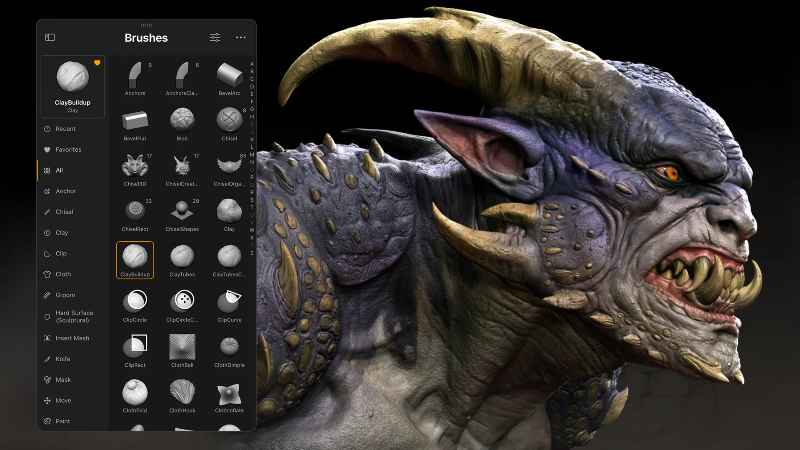

A 3D Visual Effects (VFX) Artist is responsible for creating stunning, photorealistic imagery and dynamic digital animations that integrate seamlessly into live-action footage or fully animated productions. Operating at the intersection of art and technology, these professionals design complex computer-generated elements such as fluid dynamics, explosive destruction, digital environments, and life-like creatures. They utilize advanced software like Maya, Houdini, and Unreal Engine to model, texture, and animate assets, ensuring every digital effect matches the real-world lighting, physics, and camera angles of the scene. Through close collaboration with directors, supervisors, and compositors, they transform abstract creative concepts into polished, cinematic visual realities for film, television, video games, and advertisements.

3D Visual Effects involve creating, manipulating, or enhancing imagery by integrating computer-generated 3D models and digital environments with live-action footage to achieve realistic or fantastical scenes that would be impossible, dangerous, or too costly to capture on film.